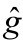
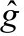
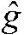
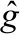
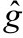
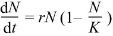
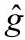
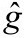
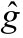
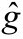

旅途指南
本书第一部分《静水》从两部门马尔萨斯模型中引出了平衡增长之谜。第二部分《流深》用族群竞择理论解释了平衡增长，进而解释了马尔萨斯陷阱。在第三部分《鱼跃》，我们将探讨更加激动人心的话题：现代经济增长是如何开启的，以及我们会不会重返黑暗时代，再度经历文明的崩溃、技术的停滞和生活水平的倒退。围绕现代增长的起源，已有无数学者基于马尔萨斯理论进行过建模。本章将介绍其中4个具有代表性的模型，并指出它们的不足。
你还记得克拉克教授信手绘制的那幅世界人均收入变化图（图1）吗？长期的经济停滞之后是拔地而起的稳健增长。对这个现象，斯坦福大学经济学教授查尔斯·琼斯曾做过一番生动的形容：
生活水平的极速增长是过去一个世纪的标志。今天统计到的美国人均GDP是125年前的10倍。如果考虑每年一个百分点左右的统计缺漏，增长幅度很容易就能超过30倍。同样惊人的是，这样的急速增长是在很短的时间内取得的。保守估计，人类100万年前就在进化上和其他灵长类动物分道扬镳了。假想这100万年的时间轴恰是橄榄球场的长边（120码，约109.7米）。在这根时间轴上，直到一万年前的农业革命前，人类都过着狩猎采集的生活——整整99码（约90.5米）。罗马帝国的辉煌发生在距离底边还有7英寸（约18厘米）的地方，工业革命在离底边还有1英寸的地方开始。生活水平持续而巨大的进步发生在很短的一段时间内——相当于这橄榄球场底边放着的一个高尔夫球。（Jones，2001）
在数学上，加速变化完全可能是指数增长的结果。比如y=1.000 1t这个函数，可以解读为每年增长万分之一，增长t年之所得。y从1增长到2，需要指数t从0增长到7 000左右（7 000年翻一番），而y从2增长到3，t只要再增加4 000左右（再过4 000年），y从3增长到4，t只要再增加3 000……在指数增长下，实现同样幅度的增长所需要的时间越来越短。这是一种加速变化。那么，现代经济增长是不是指数增长的结果呢？
答案是否定的。我们不谈人均收入，先来看一下世界人口的变化。世界人口数量从10万增长到100万，用了100万年；从100万到1 000万，用了30万年；从1 000万到1亿，用了3 000年；从1亿到10亿，用了2 000多年；而从10亿到今天的70亿[1]，只用了200年。如果人口按固定指数增长，那么上述每一轮约10倍的变化都应该耗费相同的时间。以最初的速度100万年增长10倍来计算，人口数量从10万涨起本来还需要再过350万年才能达到70亿。所以，世界人口是一种变指数增长，指数本身有增长的趋势。
工业革命前后，人均收入的变化比人口的变指数增长更为惊人。工业革命前，技术进步的果实被人口的增长吞噬，人均收入几乎没有增长的趋势。工业革命后，技术进步不仅带来人口的爆炸，还带来了人均收入的提升。人均收入打破上百万年的无趋势波动，以超越历史上人口最高增速的速度增长，这种变化绝不是复利效应所能概括的。
图10.1用一个示意图表现了人均收入增长与指数增长路径的差别。人均收入的增长路径存在一个尖角——拐点。就像水到100摄氏度变成水蒸气，到0摄氏度又会结冰一样，人类社会在拐点前后似乎经历了某种“相变”。出于和物理学家相似的追求，经济学家也需要一个模型来解释这个拐点（“相变”）。
经济学界对这一拐点的解释和建模本来已经尘埃落定。研究者们普遍接受了这样一个思维框架：马尔萨斯模型可以解释拐点前的停滞，索洛模型可以描述拐点后的增长[2]；经济学家所要做的，只是像普朗克黑体辐射定律统一短波公式和长波公式一样，构建一个既包含马尔萨斯模型，又包含索洛模型的统一模型，把这两段历史串起来。
图10.1 指数增长无法拟合带有拐点的变量变化
在经济学的增长理论文献中，这样的理论叫作“大一统增长理论”（Unified Growth Theory）。如果把工业革命前的历史称作马尔萨斯时代，把工业革命后这两百年称作索洛时代，大一统模型的目标就是讲清楚人类社会是怎么从马尔萨斯时代过渡到索洛时代的，或者说，在模型里，均衡是怎么从马尔萨斯状态跃迁到索洛状态的。这一脉文献几乎所有的创新工作都只围绕中间的“铰链”展开，而把铰链两边的结构视作当然。
本章将会介绍4个最具代表性的“大一统增长理论”，这4个理论都用马尔萨斯模型来描述拐点前的世界。可是我们现在已经知道，马尔萨斯效应并不是马尔萨斯陷阱出现的真正原因，打破一个次要的瓶颈并不能解释现代增长的起源。所以，这些基于马尔萨斯模型的大一统增长理论不可能是问题的真正答案。
在此，我想做两点说明。
第一，本章有很多的技术细节，内容颇为细碎。如果你不是学界中人，对围观学术争论兴趣不大，不妨跳过本章剩余内容，直接从下一章读起。这丝毫不会影响对后续章节的理解。但如果你自己就是一名经济学研究者，本章作为一篇少有的剖开建模细节的批判型文献综述，读来会很有趣。
第二，本章评点的论文皆出自名家之手，其中不乏诺奖得主和有望靠这些论文拿诺奖的学者。倘若本书最后影响了学界对这些论文的看法，我希望前辈们能看淡名利之失。这当然对谁都不容易。但果真热爱学问，真知岂不比我们自己的自尊心更重要吗？我没有任何贬低这些作者的意思。科学毕竟是在反复试错中前进的。对于本书的错误，我也欢迎与本章类似的就事论事、不做人身攻击的批判。
[1]2022年11月15日，世界人口数量突破80亿。——编者注
[2]罗伯特·索洛于1956年发布的经济增长模型是经济增长理论的一个基准模型。
我要介绍的第一个大一统增长理论来自斯坦福大学宏观经济学家查尔斯·琼斯教授2001年发表的论文（Jones, 2001）。前文中那段橄榄球场和高尔夫球的比喻就来自这篇文章。在第1章介绍马尔萨斯模型时，我用过一幅出生率曲线和死亡率曲线交叉的图。琼斯论文的思路也可以用一张类似的图来归纳。
如图10.2，当人均收入较低时，出生率曲线向上倾斜，死亡率曲线向下倾斜，这两条曲线的交叉就产生了一个马尔萨斯均衡（静态均衡M）。但是，在人均收入较高的阶段，社会中有可能出现“越富越少生”的现象，出生率曲线向下倾斜，甚至重新低过死亡率曲线，社会进入了人口负增长的阶段。从图上可以看出来，如果一个社会有机会在人均收入上越过非稳定均衡N，那么即使没有技术进步，人均收入也会依靠人口的衰减自动提高，也就是说，社会有自动偏离N点的趋向，所以N点被称作非稳定均衡。
图10.2 越富越少生
那么，一个社会有没有办法越过N点呢？还真有个办法。还记得第1章中介绍的“弹簧效应”吗？持续稳定的技术进步像拉弹簧一样把均衡从M点拉开，维持在动态均衡A的某个位置上。技术进步与人口的增长从相反的方向影响人均收入。两力平衡，决定了均衡A的位置。
只要技术进步足够快，把“弹簧”扯过了出生率与死亡率的最大差值处（人口在此处达到极限增长率），人均收入进一步的增加就只会降低人口增长率。因此，这个与人口极限增长率相匹敌的技术进步率是一个临界点。技术进步率一旦高于这个水平，人均收入就会持续增长，直到越过非稳定均衡N，然后人口的衰减还会进一步助力人均收入的提高。
当然，出生率曲线有可能在更高的人均收入处重新与死亡率曲线相交，构成第二个静态均衡。但那时，两条曲线间的空距已经非常狭小，人口的缓慢增加已经无法阻止技术进步对人均收入的拉升。
可是好端端的，为什么技术进步率会超过上述临界点呢？琼斯教授利用的是技术进步的规模效应：技术进步随人口的扩张而加速。技术者，观念也。观念不比苹果，你有一个苹果，我有一个苹果，我们交换了苹果，仍然各有一个苹果；而你有一个观念，我有一个观念，我们交换了观念，就各有两个观念。当更多的人参与知识的发现和交换过程时，知识的迭代就会快马加鞭。经济学家把这种机制叫作“内生增长”（Romer, 1990）。
说到内生增长，2019年诺贝尔经济学奖得主迈克尔·克雷默曾指出，既然马尔萨斯时代的人口增长率近似于经济增长率，而经济增长又源于技术进步，那么世界人口的变指数增长（指数本身随人口的增长而增长）恰好印证了技术进步的规模效应——技术进步随人口的扩张而加速（Kremer, 1993）。克雷默教授还据此推断，如果几片相互孤立的陆地拥有相似的资源密度，那么面积更大的陆地上的文明就会发展得更快，而在马尔萨斯条件下，这意味着更加稠密的人口。在大航海沟通全世界以前，亚非欧和南北美洲长期没有来往，澳大利亚更是孤悬海外。果然，截至1500年，亚非欧的人口密度（4.85人/平方公里）高于南北美洲（0.36），南北美洲又高于澳大利亚（0.026）。[1]
随着世界人口的扩张，更多的人开始参与研发，技术进步率很自然地就会随着人口的增加而提高。[2]一旦提高到超越临界点的水平，人均收入的持续增长就成了水到渠成的事情。这就是琼斯模型对现代经济增长起源的解释：内生增长+人口转型。需要注意的是，我在转述琼斯模型时做了大幅的简化和修改，以对接本书之前的内容。所以，想要学习这个模型的读者应该去读他的原文。
[1]克雷默的样本还包括比澳大利亚更小的塔斯马尼亚岛和弗林德斯岛，其人口密度依次更低。但这个仅有5个样本的回归其实有人为筛选样本之嫌。比如前文提到的复活节岛，其面积为160多平方公里，还不到弗林德斯岛的1/8，巅峰期人口数量却达到10 000（尽管这不是1500年的情形），人口密度比亚欧非大陆还要高出许多倍。但复活节岛就不在样本中。其实，在内生增长机制之外，还有一些机制也能够造成陆地大小与人口密度的正相关性。数据存在筛选嫌疑，样本还只有5个，这个回归虽然夺人眼球，却不足以作为内生增长理论的证据。
[2]琼斯模型中还设置了一个制度变量，这决定了多大比例的人口会参与研发，以加快技术进步。琼斯用这个变量来解释“为什么是英国而不是人口更多的中国和印度更早进入工业时代”。
绝大多数大一统增长理论都把人口转型放在中心位置。人口增长率随人均收入先增长后下降，是这些模型产生转轨的主配方。大一统理论家的工作就像是设计地雷，引爆的方式、引信的布局、外壳的形状五花八门，但使用的炸药——人口转型——完全相同。
在琼斯模型中，之所以发生人口转型，是因为有钱人养孩子要舍弃更丰富精彩的娱乐。人们耽于享乐，越富越少生（用经济学家的术语来说，这叫作“子女与消费的替代弹性大于1”）。
人均收入是用收入除以人口，所以收入上升和人口下降都能够提高人均收入，而上述机制只限制了人口而已。如果嫌这个机制还不够分量，除了享乐和生育之外，人们还有第三种花钱的渠道，它不仅能挤占生育的资源，还能促进收入增长，分子、分母一箭双雕，对人均收入的拉升作用就更大了。这个渠道就是教育投资。
紧接着，我要介绍的两个大一统增长理论正是为了把教育这个砝码也摆上天平。
父母希望孩子卓有成就，但是资源有限，孩子的数量和质量（教育投资）之间有一个权衡取舍。这就像20世纪七八十年代生态学里流行的r/K策略的比喻一样。遵循r策略的生物生一大堆孩子，但亲代对子代不做什么投资（类似鱼产子）。遵循K策略的生物生的孩子很少，但亲代对子代的投资很多。[1]
是r还是K策略当然也有程度之分。尽管人类是一种极端K策略的动物，但是，人也可以选择生10个孩子，让他们整天在泥里滚，或者只生一个孩子，天天逼着他弹钢琴。在马尔萨斯时代，大多数人选择了前者，但长到成年的孩子寥寥。而在工业时代，越来越多的家庭倾向于选择后者。为什么会发生这种变化呢？
布朗大学的两位经济学家沃迪·盖勒和戴维·韦尔认为，因为教育的回报上升了（Galor ＆ Weil, 2000）。盖勒是大一统增长理论领域最著名的学者。在经济学界，说起大一统增长理论，一般来说都是特指他的理论。我曾多次提及他和阿什拉夫合写的检验马尔萨斯理论的实证论文（Ashraf ＆ Galor, 2011）。那是他宏大研究计划的一部分。可以说，在所有在世的经济学家中，他的研究范围和本书最为接近，但是本书的结论与他的截然不同。
在盖勒和韦尔的模型中，教育回报的上升依然是内生增长的结果：人口扩张后，技术进步加快，旧技术的淘汰也变快了，为了让孩子赶上新的技术前沿，父母在子女教育上就会投入更多的资源。教育的投入挤占了对子女数量的投资，人口转型随之发生。与此同时，教育提升了人力资本，加快了技术进步的速度。人们因技术进步而投资教育，教育投资又带来技术进步，这个正反馈过程解释了为什么转轨一旦发生，技术进步和人口转型会如此之快。
在经济学上，存在正反馈过程的系统中往往存在多重均衡。那么，能不能把工业革命理解成一个多重均衡系统中两个均衡间的跃迁呢？盖勒和韦尔向着这个目标，构建了一个由人口自然增长触发转轨的多重均衡模型。模型的思路可以用两条曲线的互动来概括，其中一条曲线叫作增长曲线，函数为：
gt+1=g（et;Lt）
函数中，e代表父母在一个孩子的教育上花费的平均时间，g代表技术的增长率，L代表劳动人口（不妨视为人口数）。下标t和t+1表示世代。技术进步来源于人力资本，人力资本来源于教育和人口基数。每一代的技术增长率是上一代教育投入和劳动人口的函数，并且随教育投入和劳动人口的增加而提高。
另一条曲线叫作教育曲线，函数为：
每一代的教育投入取决于技术进步率。技术进步率越高，知识更迭的速度就越快，人们的教育投入就越多。
盖勒和韦尔对教育曲线做了一个假设：当技术进步率低于某个正值时，父母对子女教育花费的时间为零。在这个假设下，教育曲线在图10.3（a）的纵轴上有一个正的截距项，曲线是从点出来向外长出去的。长出去后，这个教育曲线之所以向上翘起，是因为技术进步率越高，教育投入越高；曲线向下凸出，是因为教育的边际成本递增（教育曲线对应的函数是一个凹函数）。教育曲线下方的增长曲线则向上凸起，是因为教育贡献于技术进步的边际效应递减。
图10.3的（a）（b）（c）三张图，就呈现了盖勒和韦尔的模型最主要的结果。当人口还很少的时候（近似于0），这个世界就处于（a）图的场景。因为人口太少，所以增长曲线的位置比较低，还没有与教育曲线相交。此时的均衡在增长曲线与纵轴的交点上。要明白为什么这一点是均衡，只要假想一下，如果这个世界不处在这个均衡，而享有一个高于的技术进步率g0，那么会发生什么呢？沿着教育曲线，我们找到了g0所对应的人均教育投入e0，而在e0这个教育水平下，按照增长曲线来看，下一代的技术进步率g1会比g0低，更低的g1又对应于更低的e1……最终这个动态系统收敛于增长曲线与纵轴的交点。所以，这个交点是模型唯一的稳定均衡。
盖勒和韦尔假设，即使人们对子女教育不做任何投入，凭着庞大人口的自然探索，社会也会发生缓慢的技术进步。在这种技术进步的推动下，人口会慢慢地增长，人口（劳动力）是增长曲线的一个外生变量，所以增长曲线也随之向上移动，渐与教育曲线相交[见图10.3（b）]。两线相交之后的模型存在两个稳定均衡（实心圆点）和一个非稳定均衡（空心圆点）。此时，如果出现一个巨大的科技或文化冲击（让人联想到科学革命、宗教革命、印刷术革命，等等），使得技术进步率或平均教育投入一下子跃升到空心圆点的右边，那么模型就能从低均衡跳跃到高均衡里。
不过，即使上述跳跃没有发生，由于人口的继续扩张和增长曲线的继续上移，增长曲线与纵轴的交点终有一天会高于[见图10.3（c）]。此时，原来多重均衡中的高均衡成了模型里唯一的均衡。模型里的世界会飞快地从原来纵轴上的位置扑向新的均衡。在这个过程中，技术进步率猛然提高，人均教育投入从0急速上升到一个很高的水平。结合盖勒和韦尔的其他设定，技术进步率和教育投入的这种变化，也会带来生育率的变化和人均收入的上升。
总结起来，这个模型和琼斯模型都利用了多重均衡机制。而触发均衡跃迁的，都是人口这个变量和内生增长这个机制。人口在低均衡的稳态上保持变化，当变化积累到一定程度时，均衡的跃迁就开始了。骨子里，这两个模型拥有完全相同的思路，但是盖勒和韦尔的模型更为精致。引入教育这个变量，在一定程度上解释了转轨后技术进步的来源和技术进步在转轨后猛烈的加速。相比之下，在琼斯模型里，技术进步在转轨后的加速完全依赖于人口的扩张，等到人口开始负增长，琼斯模型中的技术进步也将放缓。盖勒和韦尔的模型似乎和现实拟合得更好。
但是，很少有人注意的是，盖勒和韦尔的模型极端依赖于教育曲线在纵轴上的正截距项。这个假设的现实含义是，当技术进步率低于某个正值时，父母在每个子女教育上花费的时间为0。如果放松这个假设，模型会如何变化呢？
我画了图10.3（d）。在这张图里，我假设，即使不存在技术进步，父母仍然会在子女教育上花些许时间，比如每天半分钟——非常保守的假设，毕竟，连大猩猩每天教育子女也不止半分钟啊。如此微小的改动，却让模型原有的结论荡然无存。如图所示，在新的假设下，这个模型从一开始就只有一个均衡——高教育投入、高技术进步率的现代均衡，根本不存在什么马尔萨斯阶段。
图10.3 盖勒和韦尔的大一统增长理论
那么盖勒和韦尔为什么会做这个假设呢？在最初发布这个模型的论文里，他们说：
为确保存在一个为正值的gt+1，以使人们选择的教育水平为0，假设……（To ensure the existence of a positive level of gt+1 such that the chosen level of education is 0, it is assumed that...）
说白了，这篇论文是以教育曲线正截距为目标，反过来去假设函数形式的。假设这么个东西，就是为了得到多重均衡。论文的核心结论是假设出来的，而不是推导出来的。我翻阅了盖勒在后来的岁月里陆续发布的这个模型的改进版[2]，他没有对这个关键假设做过说明或订正。
在第9章里，我曾经引用索洛的一段话：
所有理论都依赖某些偏离事实的假设，这才成其为理论。理论研究的艺术在于抓住那些最根本的简化假设，而最终的结果又不依赖这些假设。那些结果所特别依赖的假设叫作“敏感”假设。敏感假设务必符合事实。如果理论结果完全受一条敏感假设所主导，那么只要这个假设可疑，理论就是可疑的。
这段话用来批评盖勒和韦尔的模型真是再恰当不过了。现实中，子女教育并不是近现代才有的新鲜事。而模型中，父母哪怕一天只教育孩子半分钟，模型的结论都会瓦解。这个不符合事实的敏感假设已经判定了整个理论的死刑。
[1]用r和K代表两种生育演化策略的说法来自数学建模爱好者都很熟悉的逻辑斯蒂方程：其中N是生物的数量（比如一个池塘里鱼的数量），r是最大增长率（代表繁殖能力），K是环境的承载力（代表利用环境的能力）。
[2]围绕这个模型，盖勒写过书和综述性论文，如Galor（2011）。
2002年，盖勒又和奥马尔·莫阿夫（Omer Moav）发表了一个进化论版的大一统增长理论。在这篇论文中，盖勒和莫阿夫把对教育的重视程度视为基因的表达，说工业革命就起源于基因的变化：在漫长的马尔萨斯时代里，人类在基因上变得越来越重视教育，对教育的重视程度积累到一定的程度，转轨发生。这个模型仍然依靠多重均衡机制，只是那个缓缓变化并最终引爆转轨的隐变量，从人口变成了人类的基因。
虽未明言，但这篇论文可以被看作对前一篇论文正截距假设一个针对性的补丁。马尔萨斯阶段的人均教育投入终于被允许是正值，而与此同时，教育曲线和增长曲线还能够多次相交，产生多重均衡。这是怎么做到的呢？
盖勒和莫阿夫假设世界上有两类不同基因的人：r策略人（比起孩子的质量或教育，相对而言更重视孩子的数量）和K策略人（比起孩子的数量，相对更重视孩子的质量或教育）。起初，这个世界上只有很少的K策略人，其他都是r策略人。盖勒和莫阿夫仍然沿用前一篇论文的框架，两类人的差别体现在教育曲线不一样。如图10.4（a）所示，r策略人的教育曲线仍然与纵轴相交，有一个正截距：在技术进步率为0的时候，他们不做任何教育投入。而K策略人的教育曲线与横轴相交，即使技术进步率为0，他们也会做一定的教育投入。整个社会的教育曲线作为这两类人的加权平均，就取决于社会上K策略人的比例q：
et+1（gt+1,q）=qeK（gt+1）+（1−q）er（gt+1）
10．4（a）图中的实线就是这个社会的教育曲线，因为r策略人在技术进步率小于时不做任何教育投入，整个社会只有K策略人投资教育，而技术进步率一旦超过，两类人会一起投资教育，所以这个总体教育曲线在处有一个尖角。
现在引入增长曲线，如10.4（b）图所示。一开始，模型只有一个均衡，就是图中的实心圆点。盖勒和莫阿夫假设，当重视教育的K策略人比例很低时，教育的回报将足够高，以至于尽管K策略人对生育的相对欲望低于r策略人，K策略人留存下的后代仍然高于r策略人（这个假设极为关键）。因此，K策略人的比例会渐渐上升，整个社会的总体教育曲线会向右移动，最终如10.4（c）图所示，使尖角转移到了增长曲线的右边。尖角掠过增长曲线的那一瞬间，就是模型的临界时分。在这个时点，模型发生了均衡的跃迁。刹那间，不重视教育的r策略人也开始热心于教育。他们的参与使得社会的平均教育投入猛然提高，技术进步率随之上升。
按照盖勒和莫阿夫的这个模型，人类过去之所以陷于马尔萨斯陷阱，是因为进化尚未充分，仍然保留着原始社会的许多脾性。后来，漫长的岁月改变了英国人的天性，越来越多的人开始看重子女的教育，转轨的条件才臻于成熟。如果这个理论成立，移情改性的蛰伏期又必须在漫长的农业时代里达成，那么世界上那些进入农业社会较晚的民族将很难实现现代经济增长。
图10.4 进化论版大一统增长理论
粗看，盖勒和莫阿夫的确放松了前一篇论文中不合理的敏感假设。马尔萨斯社会里也有了琅琅读书声。可是，为了修正这个错误，新的进化论版大一统增长理论其实犯下了更多更严重的错误。
首先，凭什么社会中绝大多数人一开始都是r策略人，而r策略人在技术进步缓慢的时候不做任何教育投入？为什么不能更合理地假设两类人都做教育投入，只是投入有多少之分呢？如图10.4（d）所示，一旦我们允许占人口绝大多数的r策略人在技术进步率为0时仍然每天为子女教育花上半分钟的时间，社会的总体教育曲线就没有尖角了。而没有尖角的教育曲线，是无法产生论文中华丽的多重均衡的。所以，模型仍然高度依赖一条不合理的假设。
退一步说，哪怕最不重视教育的家庭果真不在孩子教育上投入半分钟时间，可是人和人对子女教育重视程度的差异，即使由基因决定，也应该是由众多基因共同决定的，所以对教育的重视程度应该从低到高有成千上万个可能的数值，而不像孟德尔豌豆实验里的紫花、白花那样只有简单的两类。把那么多种人的教育曲线加权平均起来，如何保证曲线恰好就变成凹曲线了呢？
退两步说，就算这个平均教育曲线果真是离奇的凹曲线，社会又怎么保证这个凹曲线弯弯绕绕，恰好能够反复穿越增长曲线，产生多重均衡呢？
退三步说，就算产生了多重均衡，低均衡存在的条件恐怕极为苛刻，一出现风吹草动，这种条件就可以失去，马尔萨斯社会怎么还能维系成千上万年？
以上4条敏感假设，每一条都极端牵强，可是模型的有效性却偏偏依赖于这4条假设同时成立。所以，这篇论文中两类人的划分，表面上是简化模型的常规套路，其实是为了产生多重均衡才做的特殊设定，这又是不折不扣的敏感假设——结论是假设出来的。
这篇论文的敏感假设还不止于此。模型为了产生所需要的动态，假设优生优育的K策略人最终存活下来的孩子反而比生育至上的r策略人还要多。也就是说，只要你奉行K策略，那么孩子不仅质量高，数量也多。
倘若论文多提一句，少生几个儿子，就能给每个儿子多分些遗产，以至于孙子的总数量反而更多，这种说法尽管离谱，好歹还有一套说辞。可是论文为了让K策略在演化中渐渐占据上风，直接就假设奉行少生优生的K策略人的儿女反而更多。在不同的物种和种群之间，我尚能勉强接受这种可能性，毕竟大千世界无奇不有。但是这样的事情居然发生在同一个种群内部，而且延续了上万年甚至几十万年。在这么长的岁月里，r策略的人根本没有在数量和质量间权衡取舍，而是在彻彻底底地自杀。这样的基因，不早该被淘汰了吗？怎么论文里又假设它长期占据主导位置？
论文是这么辩解的：之所以K策略人孩子更多，是因为物以稀为贵，在K策略人非常少的时候，教育回报一定极高。这种假设在经济学文献中比比皆是，一般是为了模型求解的便利，只要这类假设不成为关键的敏感假设就无伤大雅。可是在这篇论文中，这个假设显然主导了结论。就算退一万步接受了这个假设，那么当K策略人渐渐多起来后，怎么K策略人的回报还是这么高，他们的比例怎么还是在增长呢？盖勒和莫阿夫也承认，K策略人的比例最终会随着教育回报的下降而下降。但是，他们假设，这必须发生在转轨之后——如果发生在转轨之前的话，那么均衡的跃迁就无法发生了。可是，为什么进化的逆转或者说正常化一定会迟至转轨之后才发生呢？按照作者的看法，在现代社会，r策略人已经开始重新占据上风。难道工业革命被推迟300年的话（从农业革命后1万年变成农业革命后1.03万年），人类就彻底丧失工业革命的希望了？所以，这又是一个敏感假设。
理论家的复杂模型往往最后会被打包成一个简短结论，像一个基因片段一样，嵌入其他研究的“DNA”（脱氧核糖核酸），在学术著作的相互引用中获得生命力与影响力。盖勒和莫阿夫的模型论文发表在经济学界顶尖的期刊上，也顺理成章被打包为一条核心信息：富人的自然选择优势为工业革命准备了基因条件。这条信息悄悄地潜入了本书反复提及的A Farewell to Alms，并随此书的畅销而广泛流传。克拉克教授的书其实就是盖勒和莫阿夫理论的实证版（克拉克教授也在书中的一条脚注里说明了这一点）。克拉克教授想用英国的遗产数据来证明，历史上确实存在那么一段时间，英国富人的孩子比穷人的多，所以富人的基因会不断扩散开来。对这个其实不算稀奇的事实，克拉克教授实有过度解读之嫌。要用基因演化来解释转轨，财富对生育的影响必须大到极端离谱的程度（人们拥有稍微多一点儿财产，就会多生很多孩子——对应的生育率曲线必须近乎笔直地向上走，这完全不符合事实）。
A Farewell to Alms出版后，在学界受到广泛而激烈的批评。批评集中在两点。第一点我曾经说起过。经济史学家们不满于克拉克教授用一个简单的马尔萨斯模型囊括整个古代史，更看不惯他所谓的“人类历史上只发生了一件事，即1800年前后开始的工业革命”这一说法。批评者的情绪我可以理解，但是正如前文所言，他们没有触及问题的本质——马尔萨斯理论压根儿就是错的。
而最令同行们齿冷的是第二个问题：用基因演化解释工业革命。客观地说，克拉克教授本来只是想借盖勒和莫阿夫的理论成果来升华自己实证研究的价值。但由于二战中犹太人大屠杀的痛苦记忆，把社会经济成就和基因差异联系在一起是美国社会科学界禁忌中的禁忌。克拉克教授如此立论，学术界能不炸了吗？
但是，批评者在第二个问题上也没有批评在点子上。给人贴种族主义的标签很容易，但标签是不能根除种族主义的。种族主义之恶，首先是因为它在学理上是错误的。绝大多数批评者没有指出的是，克拉克教授论点背后的盖勒和莫阿夫模型其实压根儿就是错的。克拉克教授的实证或许没什么问题，但实证的意义被严重夸大了。富人死得少、生得多这个事实，即使夸张10倍，也不能支持盖勒和莫阿夫的理论。克拉克教授给盖勒和莫阿夫的错误模型背了锅。
我下面要介绍的第四个模型来自宏观经济学家加里·汉森（Gary Hansen）和2004年诺贝尔经济学奖得主爱德华·普雷斯科特（Edward Prescott）在2002年发表的论文。论文的名字很短，叫《从马尔萨斯到索洛》（Malthus to Solow）。这篇论文是这么建模的，经济中存在两种技术：一种叫作马尔萨斯技术，这种技术使用劳动力、资本和土地来生产；另一种叫作索洛技术，这种技术只使用劳动力和资本，不使用土地进行生产。两种技术都在提高，各有恒定的技术进步率。人们每时每刻都自由地决定使用哪种技术进行生产。模型的设定就这么简单。
当人口还很少，两种技术都很粗糙的时候，人们只用马尔萨斯技术进行生产。毕竟，只有马尔萨斯技术才能利用起现成的土地。用这种技术进行生产的世界也表现出马尔萨斯经济的特征——人均收入停滞，技术进步带来的好处都被增长的人口所吞噬。
但是，土地是有限的。随着人口的增加和索洛技术的进步，马尔萨斯技术的相对回报渐渐落后于从未被使用的索洛技术。于是，开始有人转而使用索洛技术，他们的生产不再依赖土地这种固定的资源。因为劳动力和资本可以人为创造，增长永无止境，所以随着技术进步，索洛技术吸引了越来越多的人，最终整个经济迈入索洛时代：技术进步带来人均收入稳定而持续的增长。
这个模型很有洞察力地表明：马尔萨斯增长模式与索洛增长模式最主要的差别，在于自然资源的约束（导致规模收益递减，人多就穷）。如果自然资源在社会生产中占据显赫位置，经济涨着涨着就会碰到天花板。但如果人类可以通过劳动力和资本的组合完成大多数产品的生产，经济增长就没有这个天花板。
这个模型的拐点产生方式是“跳车”。比方说，你骑车去上班，骑到半路一看表，上班要迟到了，马上给老婆打电话，让她从家里出发，开车到半路，把你接上，然后开车去公司。打完电话后，你仍然在骑车（马尔萨斯牌自行车），老婆在后面开车追你（索洛牌轿车），一直到把你追上。然后，宏观上一看，哦，你在老婆追到你的那一瞬间，行进速度猛然提升。汉森和普雷斯科特的模型就是这样一个机制。
可是，这个模型并没有解决任何有关现代经济增长起源的问题。在成千上万年中没有一个人使用的索洛技术是怎么自发进步的呢？用开车接人打比方的话，就好比你等来了车，一瞅，车上空无一人，“幽灵”把车开来了。
汉森和普雷斯科特的这篇文章也产生了不小的影响力，很多大一统增长理论都以他们的模型为基础进行了扩展，使该理论变得越来越精致。但是，这一脉文献存在方法论上致命的局限——满足于拟合而非解释。
在经济学理论家中，存在着一种风气：建个模型，不用来解释任何事情，只追求模型对现实数据的拟合有多好。追究起来，他们就拿弗里德曼的话做挡箭牌——理论好不好，只看预测准不准。
科学的使命在于解释世界。只有解释了一个现象，明白了背后的道理，我们才能把握理论的适用范围。汉森和普雷斯科特所追求的却是拟合数据，而非解释现象。后续的那些论文也只忙于拟合更多的数据，把数据拟合得更好。可是，你把数据拟合得再好，却不做解释，理论又有什么用呢？
有些人会辩解，解释不就是拟合吗？没错，解释也是一种拟合。但拟合并不一定是解释。只在弗里德曼方法论里兜圈圈，很容易陷入“一切都是拟合，天下无所谓解释”的迷思，因为这恰恰是该方法论的一个自然推论。但在实践中，解释和拟合是不一样的。追求解释的人会关心模型设定的现实含义，会去检查关键敏感假设是否符合现实。拟合并不管“黑箱”里的实际构造，当环境发生结构性改变的时候，拟合模型往往会失效。2008年全球金融危机后，宏观经济学因其失败而饱受诟病。失败的一大前兆，正是这门学科在危机发生前的几十年里，越来越陷入对拟合的执迷，而昧于解释。
以上，我介绍了4个大一统增长理论。我把它们挑出来，并不是特意找来一些有缺陷的作品来反衬自己理论的成功。经济学界很少有人会公开谈论他人研究的错误，一般都是引而不论，论而不驳。所以，我本来依靠匆匆一瞥的印象并不清楚它们的缺点，但直到工作后，为了讲课才从相关文献中挑出这4篇最具名望、最有代表性的论文，我在备课过程中发现它们存在上述问题，在解释现代经济增长起源的问题上无可堪用。
无可堪用不只是因为那些硬伤。大家有没有注意到，这4个理论从来不提古罗马的辉煌与毁灭，从来不提古代中国经历的繁华与衰落，从来不提威尼斯、佛罗伦萨与荷兰的闪耀与沉寂。人类文明史在近代以前的跌宕起伏全部被抹平，只要熬到一定的人口数量，或者基因进化到一定程度，或者等来索洛号幽灵专车，现代经济增长就能像魔术般开启。
就说琼斯模型和盖勒的两个模型吧。他们把人口数量达到一定水平看作引爆转轨的条件和原因。可是，18世纪的中国和印度比英国拥有更多的人口，难道中国和印度也站在工业革命的门槛上了吗？为什么中国在经历了康雍乾三朝的人口急剧膨胀后，不仅没有开启工业革命，反而人均收入下跌了呢？爱尔兰和英国如此邻近，而且土豆为主的饮食特点使17世纪的爱尔兰人口倍增，为什么爱尔兰反而变穷了呢？即使在当代社会，还有许多人口稠密的国家处于前工业化社会，为什么它们迟迟无法开启经济转型？
这些研究者当然也意识到了这个问题。盖勒的对策是突出教育的作用。光人多还不行，还得有文化，能做研究。琼斯的应对是给模型添加一个制度变量，用来决定参与研发活动的劳动者比例——（知识）产权保护得越好，参与研发的劳动者就越多，技术进步就越快。按照这个逻辑，英国在工业革命中捷足先登，得感谢1623年的《垄断法》确立起了专利制度（North ＆ Thomas, 1973）。
但实证研究表明，专利对英国工业革命的“伟大贡献”只是理论家的想象而已。研究知识产权的经济史学家佩特拉·莫泽（Petra Moser）在考察了1851年伦敦世博会、1876年费城世博会、1893芝加哥哥伦布纪念博览会和1915年旧金山巴拿马万国博览会的产品展览和获奖数据后总结道：
历史证据表明，在有专利法的国家里，大多数创新发生在专利系统之外。没有专利法的国家在创新的数量和质量上和有专利法的国家不相上下。即使在专利法现代性程度较高的国家，如19世纪中叶的美国，大多数发明家都不使用专利，而诉诸其他方式。保密是保护知识产权的核心机制……（Moser, 2012）
教育、专利、产权保护……这些补丁充其量只能用来拟合更多的事实，它们自己都不见得是事实。
在核心机制上拿人口说事儿，不是因为他们真的发现人口有多么重要，而是因为增长理论家的数学工具只适合处理这类大而化之的变量。同样的原因，研究者只在多重均衡的路灯下找钥匙，他们不知道多重均衡之外还有什么机制能产生拐点。他们手中握了把榔头，看什么都是钉子。
200多年来，已经有许多国家跟着英国跳上了工业化的列车。有了那么多成功的先例，人们仍然说不清一个现代社会的穷国如何变富。凭什么一个人口转型的模型，顶着那么多明显的反例，却被认为能解释英国工业革命？
病根儿之一还是马尔萨斯理论。马尔萨斯理论所设想的增长约束全都是男欢女爱、生老病死——对照两部门模型，传统模型只能对付三维比较静态分析中有关人口平衡线的一维。于是，大一统增长理论也跟着在这个圈圈里打转，翻着花样儿点人口转型这个炮仗。马尔萨斯理论一倒，所有以马尔萨斯理论为基础的大一统增长理论当然跟着全错。
本章小结
◆ 经济学界把志在统一前工业时代增长模型和工业时代增长模型的理论称为大一统增长理论。大一统增长理论的一般思路是，用多重均衡间的均衡跃迁机制整合马尔萨斯模型与索洛模型。但因为马尔萨斯模型没有抓住前工业社会经济停滞的主因，现有的大一统理论对现代经济增长起源的解释必然是错误的。
◆ 盖勒团队的两个大一统增长理论都严重依赖失实的敏感假设。